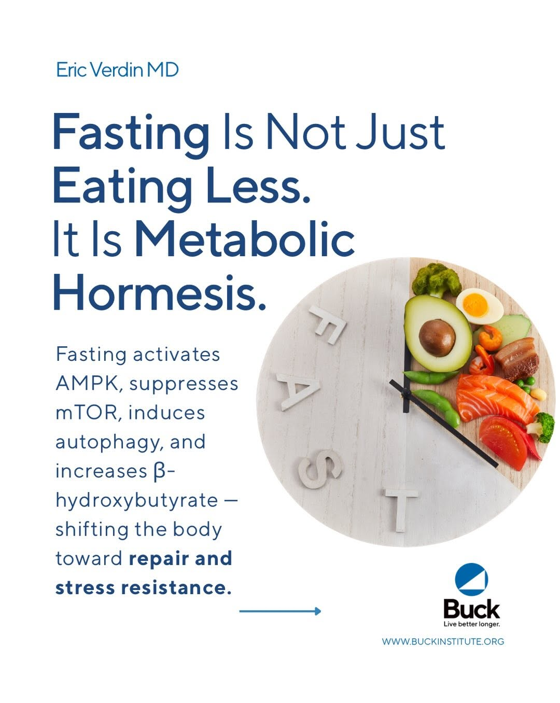

mTOR is the pathway that primarily controls autophagy.
This is why I talk about this pathway so often.
Louis notes that mTOR is the pathway that primarily controls autophagy, which is why he discusses it often. He shares a Nobel Prize post on Yoshinori Ohsumi's 2016 prize for discovering autophagy mechanisms in yeast.
mTOR is the pathway that primarily controls autophagy.
This is why I talk about this pathway so often.
Did you know that our body 'eats' itself to stay healthy?
Yoshinori Ohsumi was awarded the 2016 Nobel Prize in Physiology or Medicine for his discoveries of mechanisms for autophagy or ‘self-eating’ which refers to the way our cells destroy and recycle their own contents.
The concept of autophagy emerged during the 1960s, when researchers first observed that the cell could destroy its own contents by enclosing it in membranes, forming sack-like vesicles that were transported to a recycling compartment, called the lysosome, for degradation.
However, the phenomenon was difficult to study until the 1990s, when Ohsumi conducted a series of groundbreaking experiments with baker’s yeast to identify the genes involved in autophagy. He went on to explain the underlying mechanisms for autophagy in yeast and showed the similar machinery is used in our cells.
His discoveries accelerated understanding of how cells recycle their contents to stay healthy and laid the foundation for a better understanding of the ability of cells to manage malnutrition and infections, the causes of certain hereditary and neurological diseases, and cancer.
Read more about his work:
NobelPrize.orgNobel Prize in Physiology or Medicine 2016The Nobel Prize in Physiology or Medicine 2016 was awarded to Yoshinori Ohsumi "for his discoveries of mechanisms for autophagy"nobelprize.org

In a randomized crossover trial of healthy adults, reducing protein from 20% to 10% of calories for four weeks did not significantly change autophagic flux in blood immune cells. Louis concludes that moderate protein restriction alone, without fasting or calorie restriction, does not appear to raise basal autophagy. Caveats include measurement only in circulating immune cells and a short duration; this is a preprint.

A shared post notes that SGLT2 inhibitors protect heart and kidneys beyond glucose control, and that emerging research suggests influences on inflammation, mitochondrial function, autophagy, AMPK and mTOR. It is largely promotional for a blog, and Louis added only hashtags.

Louis argues there is biological plausibility that fasting could clear damaged arterial tissue via autophagy, linking earlier posts. He cites the 2010 DIRECT-Carotid trial showing large weight loss can regress carotid atherosclerosis, and a shared post on a Nature Metabolism 7-day fast study in 12 people with a day-3 shift in about 1,000 proteins. Direct evidence for plaque reversal by fasting is anecdotal.

Louis notes fasting extends lifespan and reduces disease risk in animals, with rodent lifespan gains of 30-40%, but that translation to humans is unknown and needs controlled trials. At minimum he sees it as a tool for fat loss. The shared Eric Verdin post explains AMPK, mTOR, autophagy and ketones, and lists cautions.

Louis reposts discussion of a study showing aging muscle has paradoxically high mTOR growth signaling that suppresses autophagy. Exercise spikes mTOR briefly but lowers basal levels long term, restoring autophagy, which he links to heart health since the heart is a muscle.
Summary of Ruvkun lab research: linoleic acid extended C. elegans lifespan 20-25% and activated conserved pathways in human cell lines. Animal and cell work only.